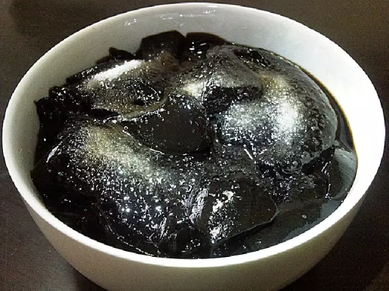
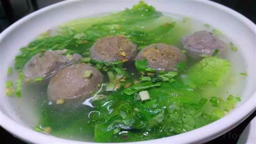
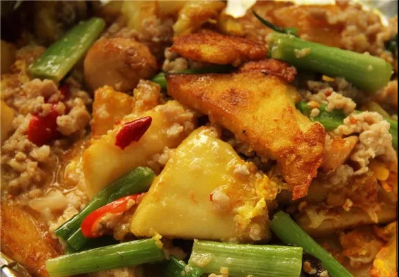
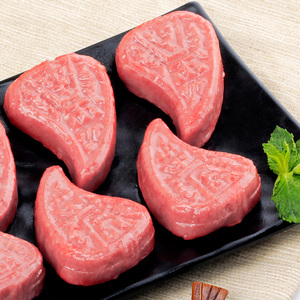
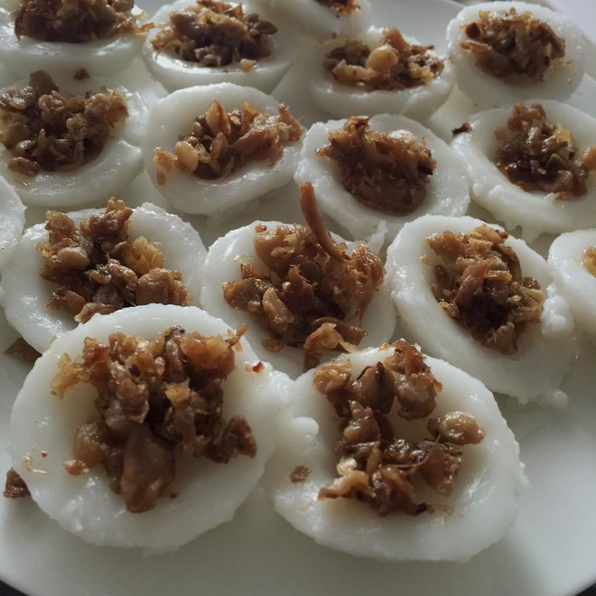
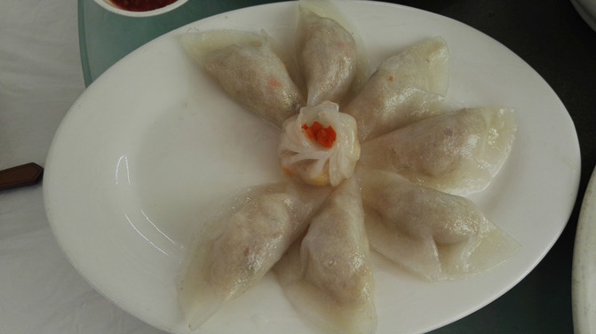
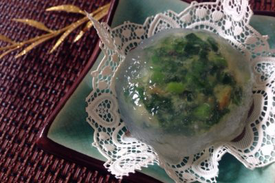

诱人的粿
在潮汕人的主食中，各种粿必不可少的，平常到每日都吃的粿条、草粿，再到各个风俗节日准备的红桃粿、发粿,潮汕人对“粿”这种食材的发掘、创新已经到达了“发疯”的地步。



上图分别为草粿，粿条，炒粿

下面列举一些有特色的粿
红桃粿
凡时年八节，潮汕几乎家家产户都要做红桃粿用于祭拜祖先。制作时把糯米饭、切成丁的湿香菇、虾米、切成丁的猪肉、炒香去外衣的花生仁、切碎的生蒜， 一起下油锅爆炒，调入味精，胡椒粉、鱼露，即成红桃粿馅。外皮则由米浆和一种叫“红花末”的色素调制而成。红桃粿外嫩里香，香菇的清香和其他食材巧妙结合在一起，让人流连忘返。

咸水粿
“咸水粿”是一个由米浆做成的粿皮，中间盛放着 热的菜脯干，色泽嫩白，口感润滑。粿皮虽无味但 十分有嚼劲，配上菜脯干的香甜和芳咸，成为一道家喻户晓潮汕的民间小吃。若适当配上辣椒酱或者甜浆，咸水粿味道会更重，更美味。

笋粿
笋粿的粿皮是用粳米磨成粉浆炊熟的，因此粿皮柔软 ，口感润滑。馅是由切成细粒的竹笋猪肉、香菇、胡 萝卜丝混合成，再调进盐、味精、胡椒粉、蒜末，最后将馅放在粿皮中间，包起来。民间津津乐道的一道美食！

韭菜粿
“咸水粿”是一个由米浆做成的粿皮，中间盛放着 热的菜脯干，色泽嫩白，口感润滑。粿皮虽无味但十分有嚼劲，配上菜脯干的香甜和芳咸，成为一道家喻户晓潮汕的民间小吃。若适当配上辣椒酱或者甜浆，咸水粿味道会更重，更美味。